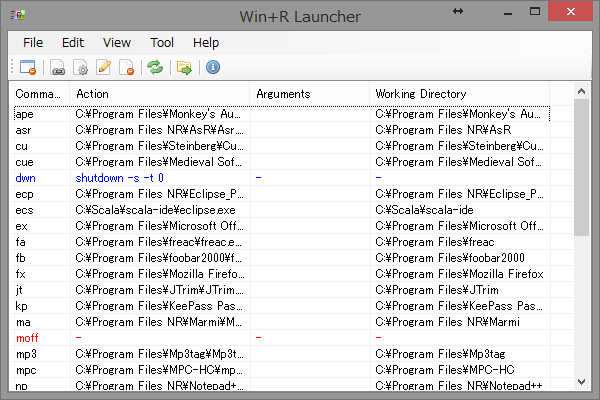

Labbit Software
Profile
View My GitHub Profile
Software
Win+R Launcher
概要
このソフトウェアは、「ファイル名を指定して実行」をランチャーとして使用するための、ユーティリティーソフトウェアです。
スクリーンショット

システム要件
.NET Framework 4.5.2 以上
ダウンロード
Win+R Launcher ver 0.1.0.4
ソースコード
https://github.com/mikiepure/WinRLauncher